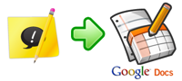

What's New
Latest changes and updates to the Snippy Chrome extension. Read the full changelog on the project website.
Version 0.3 (early March 2010)
Upload snippets to Google Docs

You can now upload your snippets to
Google Docs.
Start collecting snippets. Once done, click the Snippy toolbar icon (
) and navigate to the
Show Snippets page.
From there you can upload your snippets (along with your comments and
custom title) to Google Docs using the dedicated button:

The first time you upload something to Google Docs, Snippy will ask your permission to access Google Docs on your behalf. You can always revoke it from the options page.
Previous versions
You can read the complete list of previous changes on the project website.